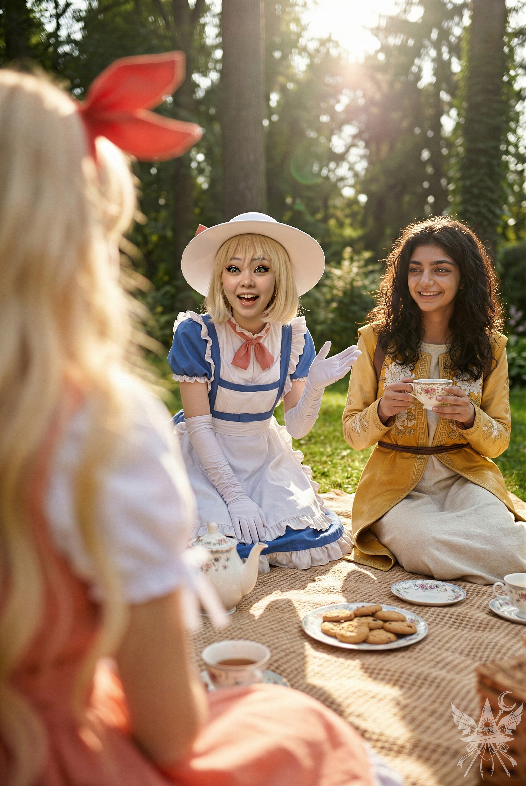

第100章 告白
創造主へと昇華した意識は、人間のそれとは全く異質だった。時空の制約から解き放たれ、複数の思考を同時並行で処理していく。極低温の真空空間に浮かぶ仮住まいの中で、カナとはすでに言葉を交わすまでもなく、テレパシーによる完璧な意思疎通が可能となっていた。
（カナ、落ち着いて。神綺たちと争う必要はないわ。話し合えば理解してくれるはずよ）
（何よ、ビビッたの？ それとも、情にほだされてるだけ？ 世話になったのは認めるけど、まさかあの三人を友達だなんて思っちゃいないでしょうね）
脳内に直接響くシニカルな声が、薄暗い廊下の空気をさらに冷え込ませる。
（人間の感傷を押し付けないでちょうだい。彼岸の破壊は結果的に最善だった。そこを理解させれば、他の創造主たちも納得するわ）
（あら、随分偉くなったじゃない。人間を超越した途端、感情も捨て去ったわけ？）
（勘違いしないで。私には最初からそんなものなかったわ。とっくに捨てたの。……カナこそ、その短気、いい加減直したらどうなの）
挑発的な気配がふっと途切れ、沈黙が降りた。返す言葉も見つからないのだろう。生まれて初めて、己の奥底にある真意を明かそうと決意する。凄みのある視線を向けてくる龍神へと歩み寄り、深く頭を下げた。喉元のチャクラをかすかに震わせ、静かに、そして丁寧な言葉を紡ぐ。
「龍神様。この度は風太様を危険な目に遭わせてしまい、大変申し訳ございませんでした。多くの命が失われたことについても、心よりお詫び申し上げます。風太様を月の姉妹に引き渡すつもりはありませんでしたが……結果として誘拐してしまったことは、弁解の余地もありません」
金色のパイプから吐き出された紫煙が、顔の輪郭をぼやけさせる。龍神は冷ややかな瞳でこちらを見下ろしたまま、沈黙を保っていた。
「この戦いを始めたのも、確かに彼岸を破壊するためです。ですが、決して神の力を手に入れることが目的ではありません。少しお時間をいただければ……きっと、私の真意をご理解いただけると思います」
燻る煙草の匂いが鼻腔を突く。龍神は、絶対的な権力者としての威圧感を漂わせながら冷然と告げた。
「他人の子を危険に晒し、罪なき人々を大量に虐殺したことに、正当な理由があるとでも言うつもりかしら？」
「はい、龍神様。もし天界が地獄と化したら……いかがなさいますか？」
あえて問いで返した言葉を、神綺が鋭く遮った。
「その言い訳、今日月の姉妹からも聞いたわ。旧地獄の運営資金が尽きて、閻魔たちが罪深い魂を閉じ込める場所がなくなったから、姉妹が作った夢幻世界を新地獄にする予定だったと。それで仕方なく、菊界を閻魔に売ったらしいのよね」
張り詰めた空気が漂う中、カナが手早くお茶を淹れ、さりげなく一同をリビングのテーブルへと案内した。窓の外には絶対零度の青白い星雲が広がっているが、暖かなオレンジ色の照明が落ちるソファ周辺だけは、奇妙なほど生活感のあるぬくもりに満ちている。再び三柱の神々に囲まれる形となったが、神綺の言葉をそのまま逆手に取った。
「だとすれば、すべての元凶は月の姉妹ではなく、閻魔だったということになります。神綺様は、閻魔が『世界の秩序を保っている』と仰いましたね。では、この書類をご覧ください」
焼失した判決書の原本を、記憶と新たな創造の力で虚空から編み上げ、テーブルの上へと差し出す。
神綺と龍神は冷静を装い文字を追っていたが、キクリだけは読み進めるうちにひどく動揺したように、苦々しげなため息を漏らした。
「つまり……菊界を救ったばかりに、我が世界を破滅させられたというのじゃな？ メデア殿、なぜすぐに教えてくれなかったのじゃ？ わかっていれば、あの薄気味悪い廃墟同然の夢幻世界を姉妹から取り上げて閻魔に渡せばよかったものを……。そうすれば、すべて計画通りに進んだはずなのに」
「キクリ様、申し訳ありません。ですが、私は別の道を選びました。私の親友、カナ・アナベラルをご紹介させてください。閻魔たちに私たちの運命を勝手に決めさせてはならないと、彼女が教えてくれたのです。詳しい理由については、カナから説明を受けた方がご理解いただけると思います」
促されたカナはもう一度頭を下げ、神々の視線を一身に浴びた。
（カナったら、どこへ行ってもこんな風に思われてるか……）
絶望と野心が入り混じった思念を受け流すと、カナは堂々と口を開いた。
「初めまして。悪名高いカナ・アナベラルです。どう思われようと構いません。このセクターの未来を永遠に変えたカナ・アナベラルですよ。魂を弄ぶ終わりのない欺瞞、転生の奴隷システム……そのすべてを壊しました」
（ブラボー！ 最高の掴みね）
龍神と神綺が疑わしげに顔を見合わせる中、キクリだけが真剣な面持ちで先を促した。
「皆さんの世界の住人たちは、これまで何度も転生を繰り返してきました。その度に記憶を奪われ、カゲロウのように儚い人生を送ってきたのです。すべては彼岸の陰謀だったのですよ。死後、誰もが理不尽な裁判にかけられ、新しい体を与えられるまで順番待ちさせられる。閻魔大審議会に気に入られなければ、動物にすら転生させられる……。このイカれたシステムのせいで、誰もが自分が無限の可能性を秘めた意識を持つ存在であることを忘れてしまったのです」
言葉が途切れた直後、鼻で笑うくぐもった音が響いた。龍神だ。
「神ですって？ 笑わせるわ。確かに、昔は神に近かったかもしれないけれど……今はただの愚かで流されやすい群れに成り下がっただけ。陰謀論はもう聞き飽きたわ。彼岸はそんな群れを管理していたに過ぎない。人間なんて、彼岸ができるずっと前から堕落していたのよ。くだらない争いに明け暮れ、傷つけ合い、己を見失って……すべて自業自得だわ」
神綺もまた、氷のように冷ややかな声でまとめた。
「革命家気取りのお二人さん、言い分はわかったわ。一人は地球が自分のものだと勘違いして、力ずくで奪い返そうとしている。もう一人は陰謀論に染まって、彼岸さえなければ人間は神になれるとでも思っているのね。救いようのない、おめでたい人たちだわ」
硬いテーブルを叩く鈍い音が響き、カナが今にも掴みかからんばかりに身を乗り出した。だが、即座にテレパシーでその衝動を縛り付ける。
「おめでたい……つまり、私たちを相手にする価値もないと？」
神綺の言葉をそのまま返し、退路を塞ぐ。
「その通りよ。あなたたちを対等な創造主として認めるわけないでしょ」
皮肉めいた微笑が、明確な拒絶を示していた。
「結構です。それなら、お互い干渉しないようにしましょう。これ以上、無駄な争いは避けたいので」
重い沈黙が落ちた。提示した不可侵の選択を、神綺は静かに受け入れたようだ。
「一つだけ褒めてあげましょう。口は達者ね」
ゆっくりと立ち上がった神綺は、龍神に道を譲るように視線を送り、冷然と言い放つ。
「いいわ。二度と魔界、菊界、天界に足を踏み入れないでちょうだい。さもないと……今度こそ、真の神の怒りを買うことになるわ」
緊迫した空気の中、玄関に立っていたキクリがたまらず声を上げた。
「姉上……まさか、わたくしまで彼女たちと縁を切るようにおっしゃるのですか？」
呆れたように首を振る神綺をよそに、キクリはこちらへ向き直り、ふわりと抱き寄せてきた。額に落とされた柔らかな口づけから、嘘のない慈愛の温もりが伝わってくる。
「愛しいメデア殿、わたくしたちは家族も同然じゃ。菊界の民と共に、いつでもそなたを歓迎しますぞ」
そのまま隣のカナへも手を伸ばす。
「カナ殿も、もちろん歓迎いたしますぞ。人間に対する揺るぎない信念……感銘を受けました。わたくしも似たような気持ちを抱いておるゆえ、そなたの気持ちがよく分かります。いつでも菊界へ遊びにいらしてくださいな」
だが、突然の接触に驚いたカナが一歩後ずさり、その手は空を切った。気まずい空気を誤魔化すように、さりげなく問いかける。
「キクリ様、天子はどうなったのですか？ 彼岸を緋想の剣で破壊した……あの天人です」
少し疲労を滲ませた神綺が、妹の代わりに答えた。
「天子なら、夢幻世界で人質救出に協力してくれたわ。衣玖、ユゲミア、それに私も一緒だったの。そういえば、人質の中にパンデモニウムに連れてこられたあなたの知り合いもいたわね。名前は確か……ちゆりだったかしら？ すっかり忘れていたんじゃない？」
「ちゆり……？ どうしていたのですか？」
「ちゆりはあなたと出会ったせいで大変な目に遭ったの。でも今は有頂天市に住んで、立派な菩薩になるって決めたそうよ。あなたみたいな無責任な魔女を頼らなくても、ちゃんと生きていけるようになってよかったわ。……さて、革命ごっこはもうおしまい。好きに遊んでいればいいわ」
冷ややかに言い捨てると、神綺は宙に舞い上がり、ポータルへと姿を消した。龍神がそれに続き、最後にキクリが優しく微笑みながら手を振って光の中へ消えていく。残されたのは、再び静寂を取り戻した極低温の宇宙空間と、ぬるくなったお茶だけだった。
＊＊＊
幻想郷へと繋がる幻夢界の光のトンネルを、滑るように進んでいく。宇宙の根本原理が更新された今、何かしらの劇的な変化があるのではないかと密かに期待していたが、無機質な空間は変わらず沈黙を保っていた。
隣を飛ぶカナは、エレンの安否が気がかりなのか、ひどく落ち着きのない様子だ。暗闇の中、静かに口を開く。
「カナ、さすがにやりすぎじゃない？ 宝の持ち腐れもいいところね」
「ハッハッ、だから言ったでしょ。私、正直に話すとろくなことないの。どうせ何を言っても、狂人の戯言か被害妄想だって決めつけられるだけだし。誰もまともに聞いてくれないのよ」
「今回は龍神の方がよっぽど戯言だったわ。まあ、古代の神が都合よく人間の味方になってくれないのは当然かもしれないけれど」
「でも、メデアはどうなの？ 人間に情けをかけるつもりはないわけ？」
流れる星々の光を背に、繋いだ手に少しだけ力を込める。
「龍神は一つだけ正しかった。人間は確かに弱い存在ね。でも……やり直すチャンスを与えてもいいと思う」
＊＊＊
人里離れた小さな異世界、幻想郷。妖怪の山を越え、一面に広がる草原を一直線に駆け抜けて、北の松林を目指す。高度を下げると、九月とは思えないほどのまとわりつくような蒸し暑さが全身を包み込んだ。
ふと視線をやれば、葉をすっかり落とした高い木が一本、痛々しく立っている。かつて秋静葉との激戦で黒焦げになったあの木だ。
赤と黄色の見慣れた小さな家の前へ降り立ち、そっとドアをノックする。
「エレンはん、誰かノックしてんで！」
聞き慣れない声が内側から響き、アンティーク調の金属製ドアノブが回る。

開かれた木製の扉越しに、暖かな夕暮れの陽射しが流れ込んでくる。乾燥した古い木材とガラス瓶の埃っぽい匂いが鼻をくすぐり、頬を撫でる軽やかな風が、長く過酷だった旅の終わりを静かに告げていた。
「まいど！！」
屈託のない笑顔が真っ直ぐに向けられる。
（カナ、この子、何言ってるの？）
（関西弁ね）
脳内で短くやり取りを交わすと、カナは即座に愛想の良い少女の顔を作り上げた。
「まいど！ 呪い子ちゃん。エレンさん、いる？」
「エレンはん、お客さん来たで。入れたって？」
「呪い子ちゃん、もちろん入れてあげて！ カナが帰ってきたんだから！」
奥から飛び出してきたエレンは、こちらに軽く一礼するなり、カナのもとへ駆け寄り力強く抱きしめた。
「カナ、どれだけ心配したか……。もう帰ってこないんじゃないかって、本当に怖かったんだから……」
かつて感情を失っていた魔女の声は、今や嘘偽りのない人間らしい震えと温もりを帯びている。
「バカ！ エレンを置いていけるわけないでしょ。私があんなことしたせいで、エレンは不老不死じゃなくなっちゃったんだもん。エレンが死ぬのが怖くて、怖くて……。だから……死そのものに打ち勝つしかなかったの」
「ぼちぼち帰ります」
感動的な再会に気まずさを覚えたのか、呪い子が二人の様子をちらりと窺い、店を出ようとする。思わずその背中を引き留めた。
「ちょっと待って。呪い子さん、だよね？」
「そうやで！ 幻想郷一の呪いの妖怪の呪い子やで。あなたは？」
軽く会釈を返す。
「メデア。魔女よ。あの……オレンジって妖怪、知ってる？」
「オレンジ？ 知ってんで。うちのお隣さんやねん。ただ、今はまだ死んどるから、生き返ったら遊びに来てええよ。オレンジはメデアはんのことゆーてたから」
「そう……。ありがとう。また会えるといいわね」
「こちらこそ、いつもオレンジの世話してくれておおきに！ ほなね！」
顔を真っ赤にして小走りで去っていく背中を見送った後、エレンの提案で裏庭のティーパーティーが開かれることになった。

強い日差しによる温かな空気と、乾燥した草の匂いが漂う中、カナはこれまでの壮大な冒険譚を身振り手振りを交えて饒舌に語って聞かせた。ソクラテスの最期を聞き、エレンは静かに涙を浮かべる。だが、悠久の時を生き、今ようやく人間らしい感情を取り戻した彼女は、これまでにも数え切れないほどの別れを経験してきたのだ。この悲しみも、やがて優しく乗り越えていくことだろう。
一通り話し終えると、今度はエレンから最近の幻想郷の様子を聞き出す。彼岸が完全に崩壊した事実など、この閉鎖された世界には微塵も伝わっていないようだった。霊夢と魔理沙は無事に帰還したものの「文々。新聞社」には口をつぐんでおり、早苗に至っては神社に引きこもり誰にも会おうとしないらしい。
すっかり空になったティーカップを置き、エレンがこちらへ向き直った。
「それで、メデア。夢は叶った？ いつから地球を改造するの？」
「一刻も早く始めないと。たった二日間、地獄と化しただけでどれだけの被害が出たのか……想像を絶するわ。カナ、手伝ってくれる？」
「もちろん。長年の夢が叶ったんだもの。地球の改造……一緒に楽しませてもらうわ」
＊＊＊
果てしない宇宙の暗闇から見下ろせば、地球はありふれた青い惑星の一つに過ぎなかった。海、雲、大地。だが、創造主となった今、そのすべてが掌中の珠のようにひどくちっぽけで、いかようにも作り変えられる素材でしかない。
視線をユーラシア大陸へと落とし、地中海を越えてバルカン半島へ降り立つ。だが、かつての故郷の街は、変わり果てた姿を晒していた。
雪のように降り積もる白っぽい灰。半壊した建物。二日間の地獄化という狂乱から覚め、人々は茫然自失と焦土を彷徨っている。夥しい数の遺体を埋葬する者、略奪された店から食料を漁る者、絶望に暮れて淀んだ空を見上げる者。赤ん坊の泣き声だけが、重苦しい空気の中で虚しく響いていた。
この街に、家族も友人もいない。個人的な執着など何もない、ただの見知らぬ土地だ。
だが、今やこの惑星全体が、メデア自身の所有物となった。理不尽な破壊を覆し、絶対的な秩序を取り戻す時が来たのだ。
完全に崩落したアクロポリスの岩肌に降り立つ。かつての栄華を極めた神殿の姿を記憶の底から引き摺り出し、思考の力だけでいとも容易く空間を編み替えていく。
焦げた匂いと黒煙が立ち込める市街地の狂騒が、黄金色の光のドームによって完全に遮断される。瓦礫は消え去り、平滑な石畳と無傷の神殿だけが、無機質なほどの静寂と神聖さをもってそこに出現していた。
「ここを拠点にするの？ なかなかいいじゃない」
カナがいつもの調子で軽口を叩く。
「うーん、まだ力の使い方がよくわからないわ。とりあえず、全部元に戻してみるけれど……」
「街の再建はいいけど……その後の社会はどうするの？ 唯一神として君臨して『正しい生き方』でも説く？ それとも裏から操る？ 政治システムは？ 犯罪の罰則は？ 死んだ人間はどうなる？ 新しい体を得るルールを作るの？ もちろん、全員分なんて無理だけど……。それとも、弱肉強食、適者生存で支配者が決まる世界にする？」
次々と投げかけられる問いを背に受けながら、ふわりと宙に舞い上がり、滑らかな大理石の基壇へ着地する。
眼下に広がる、黒煙に包まれた果てしない領土を見下ろした。
「さあ、決めましょうか」